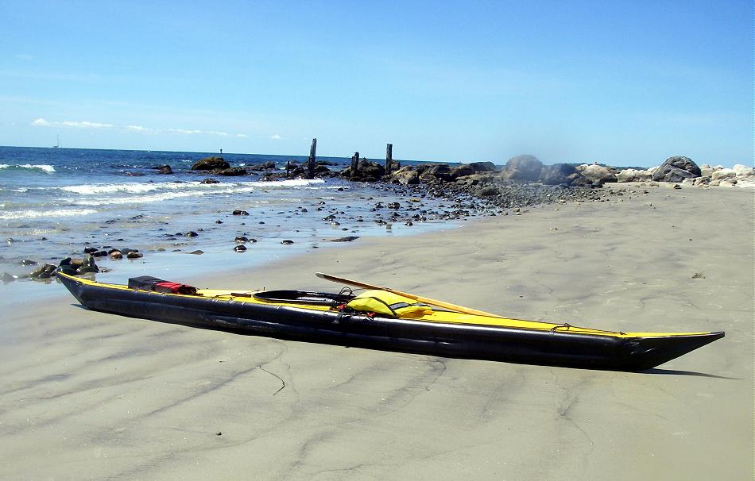

| Sonnet 16 by David Long (US) | Menu Last Page Next Page |
|

Davids Comments.....
"Yesterday I was finally able to get the Sonnet out into the open Atlantic. Launched at Stonington, Ct - paddle across Little Narragansett Bay - around The Sonnet continues to impress. The boat feels very solid in the Atlantic rolling swells, it is very easy to maneuver and surfs well when it catches a bit of a wave. I did a landing and launch again in the small surf on the beach at Napatree. The Sonnet is just fun to paddle, still very comfortable and relaxing, even in the larger swells." |
|